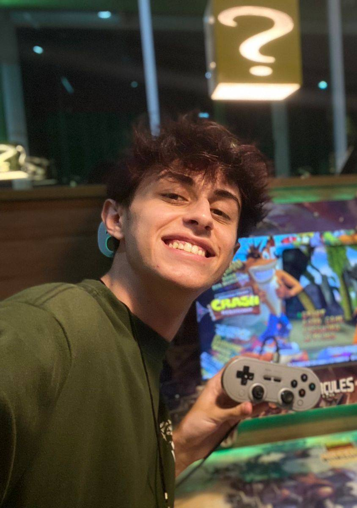

Esse projeto tem o propósito de verificar se obtive as competências técnicas para passar de semestre.
Sobre mim mesmo, desde criança eu tenho uma paixão por jogos e uma das coisas que eu mais aprecio até hoje é a trilha sonora,
o jeito que a música me encanta, aterroriza, acalma e agita, tudo isso faz meu amor por jogos e música aumentar cada vez mais,
e com esse projeto, quero mostrar como e porque eu gosto tanto disso, além de algumas recomendações,
a musica me afeta de um jeito, e talvez, para você seja e possa ser diferente, mas o que importa é abraçar isso e aproveitar,
sem pensar realmente em qualidade, mas como te afeta e o que significa para você, conforme fui crescendo,
ouvir certas músicas me causam uma nostalgia, um momento que vivi, uma fase que passou, uma pessoa importante, um sentimento esquecido e muito mais,
espero ,de coração, que com esse projeto você possa cultivar da mesma paixão que eu tenho.
A música transforma o ambiente e faz o jogador se sentir parte do jogo.
Em Silent Hill 2, os ruídos e momentos de silêncio criam uma atmosfera de tensão e mistério.
A trilha sonora intensifica os sentimentos de cada cena.
Em Shadow of the Colossus
e Final Fantasy X, as músicas transmitem tristeza,
superação e admiração, criando momentos marcantes.
A música acompanha o ritmo da jogabilidade.
Em Halo 2 e Metroid Prime, as trilhas intensificam os combates
e acompanham a exploração, ajudando a transmitir o clima de cada situação.
Algumas músicas bastam para lembrar de um jogo inteiro.
Em Tony Hawk's Pro Skater 2 e
GTA San Andreas,
as trilhas se tornaram parte da identidade dos jogos e continuam despertando nostalgia.
Nine Sols é um soulslike sobre um gato que quer retomar o poder de uma estação espacial. Esse jogo tem uma história muito emocionante e uma gameplay extremamente satisfatória.
Projeto acadêmemico sem fins lucrativos ou divulgacionais,
esse projeto serve para demonstrar as competências técnicas do criador e sua paixão por jogos e musica